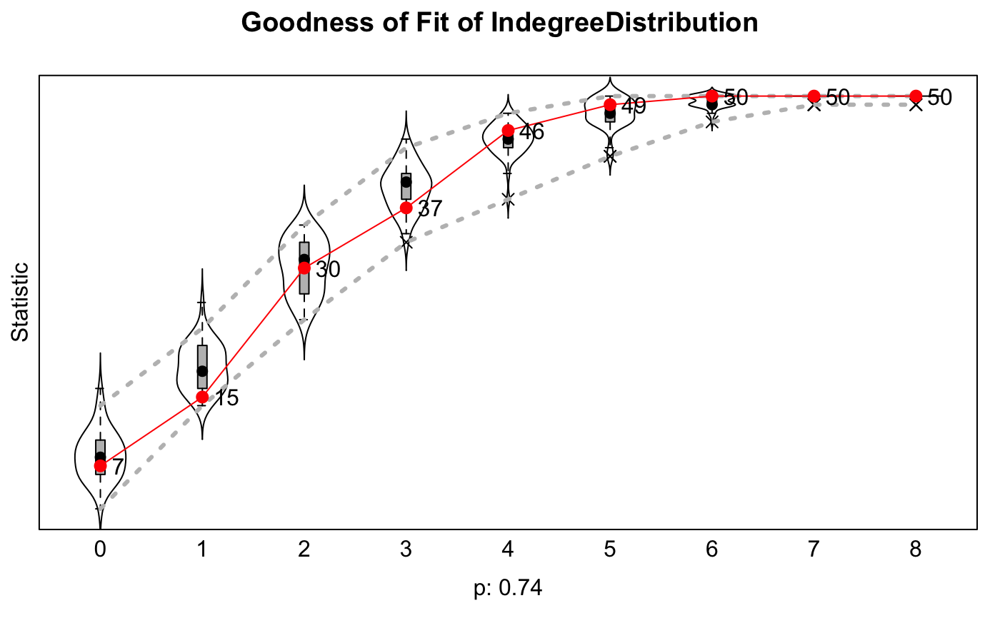
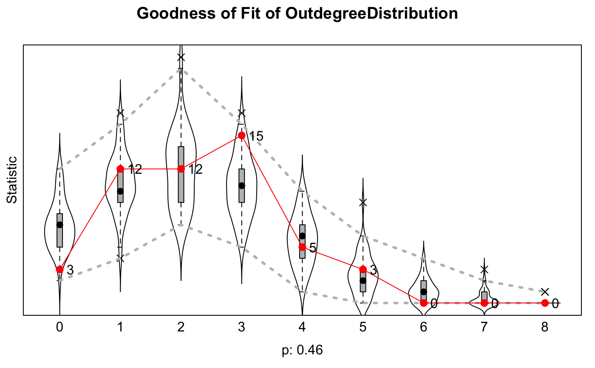
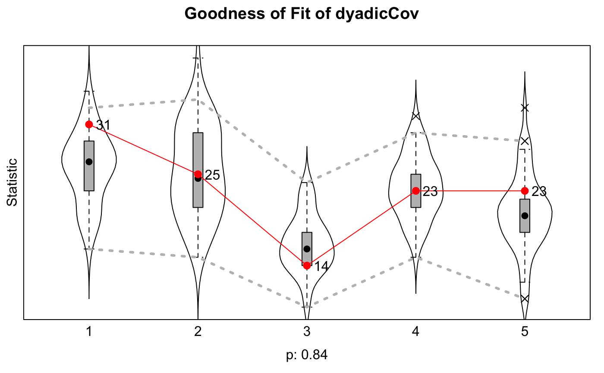
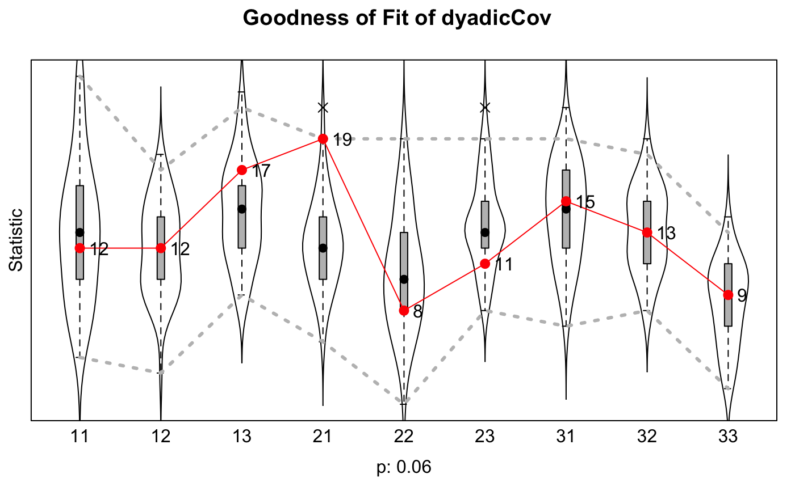
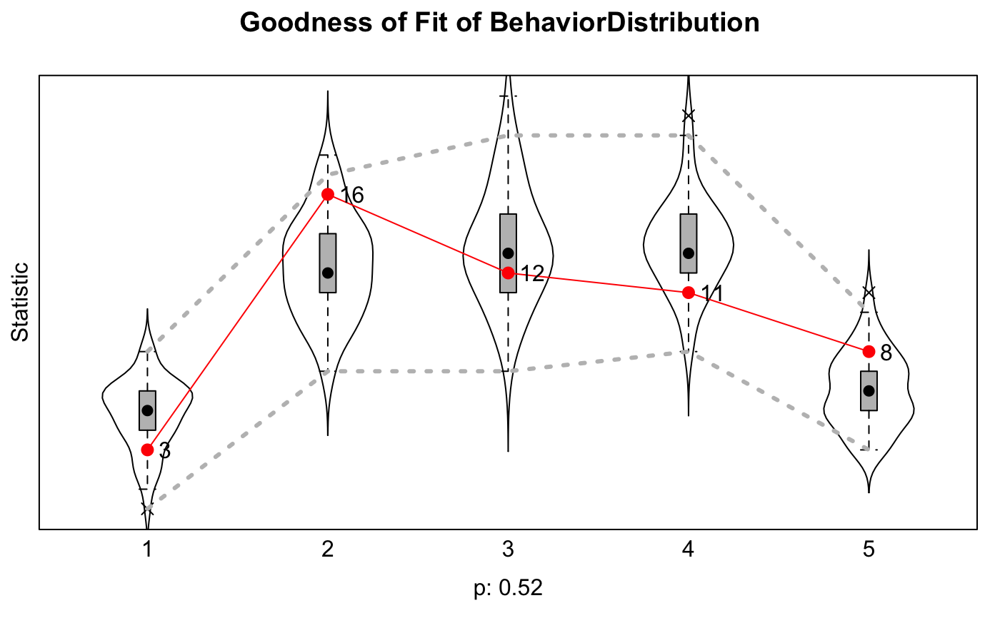
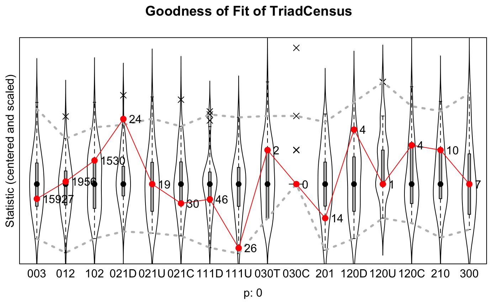

sienaGOFsienaGOF-auxiliary.RdThe functions given here are auxiliary to function sienaGOF
which assesses goodness of fit for actor-oriented models.
The auxiliary functions are, first, some functions of networks or behavior
(i.e., statistics) for which the simulated values for the fitted model
are compared to the observed value; second, some extraction functions
to extract the observed and simulated networks and/or behavior
from the sienaFit object produced by siena07
with returnDeps=TRUE.
These functions are exported here mainly to enable users to write their own versions. At the end of this help page some non-exported functions are listed. These are not exported because they depend on packages that are not in the R base distribution; and to show templates for readers wishing to contruct their own functions.
OutdegreeDistribution(i, obsData, sims, period, groupName, varName, levls=0:8, cumulative=TRUE) IndegreeDistribution(i, obsData, sims, period, groupName, varName, levls=0:8, cumulative=TRUE) BehaviorDistribution(i, obsData, sims, period, groupName, varName, levls=NULL, cumulative=TRUE) TriadCensus(i, obsData, sims, period, groupName, varName, levls=1:16) mixedTriadCensus(i, obsData, sims, period, groupName, varName) dyadicCov(i, obsData, sims, period, groupName, varName, dc) sparseMatrixExtraction(i, obsData, sims, period, groupName, varName) networkExtraction(i, obsData, sims, period, groupName, varName) behaviorExtraction(i, obsData, sims, period, groupName, varName)
| i | Index number of simulation to be extracted, ranging from 1 to
|
|---|---|
| obsData | The observed data set to which the model was fitted; normally
this is |
| sims | The simulated data sets to be compared with the observed data;
normally this is
|
| period | Period for which data and simulations are used (may run from 1 to number of waves - 1). |
| groupName | Name of group; relevant for multi-group data sets;
defaults in |
| varName | Name of dependent variable. |
| levls | Levels used as values of the auxiliary statistic.
For |
| cumulative | Are the distributions to be considered as raw or cumulative (<=) distributions? |
| dc | Dyadic covariate: matrix with the same dimensions as adjacency matrix for dependent network variable. |
The statistics should be chosen to represent features of the network that are not explicitly fit by the estimation procedure but can be considered important properties that the model at hand should represent well. The three given here are far from a complete set; they will be supplemented in due time by statistics depending on networks and behavior jointly. The examples below give a number of other statistics, using the packages sna and igraph.
The levls parameter must be adapted to the range of values that is
considered important. For indegrees and outdegrees, the whole range should
usually be covered. If the range is large, which could be the case, e.g.,
for indegrees of two-mode networks where the second mode has few nodes,
think about the possibility of making a selection such as
levls=5*(0:20) or levls=c(0:4,5*(1:20));
which in most cases will make sense only if cumulative=TRUE.
The method signature for the auxiliary statistics generally is
function(i, obsData, sims, period, groupName, varName, ...).
For constructing new auxiliary statistics, it is helpful to
study the code of OutdegreeDistribution, IndegreeDistribution,
and BehaviorDistribution and of the example functions below.
TriadCensus returns the distribution of the Holland-Leinhardt triad
census according to the algorithm by Batagelj and Mrvar
(implementation by Parimalarangan Slota, and Madduri). An alternative is the
TriadCensus.sna function mentioned below, from package sna, which
gives the same results. Here the levls parameter can be used to exclude
some triads, e.g., for non-directed networks.
The Batagelj-Mrvar algorithm is optimized for sparse, large graphs and may be
much faster than the procedure implemented in sna. For dense graphs
the sna procedure may be faster.
dyadicCov assumes that dc is a categorical dyadic variable,
and returns the frequencies of the non-zero values for realized ties.
Since zero values of dc are not counted, it may be advisable
to code dc so that all non-diagonal values are non-zero,
and all diagonal values are zero.
OutdegreeDistribution returns a named vector, the distribution
of the observed or simulated outdegrees for the values in levls.
IndegreeDistribution returns a named vector, the distribution
of the observed or simulated indegrees for the values in levls.
BehaviorDistribution returns a named vector, the distribution of the
observed or simulated behavioral variable for the values in levls.
TriadCensus returns a named vector, the distribution of the
Holland-Leinhardt triad census according to the algorithm by Batagelj and Mrvar.
mixedTriadCensus returns a named vector, the distribution of the
mixed triad census of Hollway, Lomi, Pallotti,and Stadtfeld (2017).
dyadicCov returns a named vector, the frequencies of the non-missing
non-zero values dc(ego,alter) of the observed or simulated (ego,alter) ties.
sparseMatrixExtraction returns the simulated network as a
dgCMatrix;
this is the "standard" class for sparse numeric matrices in the
Matrix package. See the help file for dgCMatrix-class.
Tie variables for ordered pairs with a missing value for wave=period or
period+1 are zeroed;
note that this also is done in RSiena for calculation of target statistics.
Tie variables that are structurally determined at the beginning of a period
are used to replace observed values at the end of the period;
tie variables that are structurally determined at the end, but not
the beginning, of a period are used to replace
simulated values at the end of the period.
To treat the objects returned by this function as regular matrices,
it is necessary to attach the Matrix package in your session.
networkExtraction returns the network as an edge list of class "network"
according to the network package (used for package sna).
Missing values and structural values are treated as in
sparseMatrixExtraction, see above.
behaviorExtraction returns the dependent behavior
variable as an integer vector.
Values for actors with a missing value for wave=period or period+1 are
transformed to NA.
Batagelj, V., and Mrvar, A. (2001). A subquadratic triad census algorithm for large sparse networks with small maximum degree. Social Networks, 23, 237-243.
See http://www.stats.ox.ac.uk/~snijders/siena/ for general information on RSiena.
Holland, P.W., and Leinhardt, S. (1976). Local structure in social networks. Sociological Methodology, 6, 1-45.
Hollway, J., Lomi, A., Pallotti, F., and Stadtfeld, C. (2017) Multilevel social spaces: The network dynamics of organizational fields. Network Science, 5(2), 187-212.
Lospinoso, J.A. and Snijders, T.A.B. (2019). Goodness of fit for stochastic actor-orientedmodels. Methodological Innovations, 12:2059799119884282.
Parimalarangan S., Slota, G.M., and Madduri, K. (2017). Fast parallel graph triad census and triangle counting on shared-memory platforms, 2017 IEEE International Parallel and Distributed Processing Symposium Workshops (IPDPSW), Lake Buena Vista, FL, pp. 1500-1509.
### For use out of the box: mynet1 <- sienaDependent(array(c(s501, s502), dim=c(50, 50, 2))) mybeh <- sienaDependent(s50a[,1:2], type="behavior") mycov <- c(rep(1:3,16),1,2) # artificial, just for trying mydycov <- matrix(rep(1:5, 500), 50, 50) # also artificial, just for trying mydata <- sienaDataCreate(mynet1, mybeh) myeff <- getEffects(mydata) myeff <- includeEffects(myeff, transTies, cycle3)#> effectName include fix test initialValue parm #> 1 3-cycles TRUE FALSE FALSE 0 0 #> 2 transitive ties TRUE FALSE FALSE 0 0# Shorter phases 2 and 3, just for example: myalgorithm <- sienaAlgorithmCreate(nsub=1, n3=50, seed=122, projname=NULL)#> If you use this algorithm object, siena07 will create an output file /var/folders/pl/ngry9kn13p7466xwk0_2xyh40000gn/T//RtmpNeONkK/Siena3ebf252bee87.txt . #> This is a temporary file for this R session.#> #> Start phase 0 #> theta: 4.696 -1.489 0.000 0.000 0.000 0.706 0.322 0.000 #> #> Start phase 1 #> Phase 1 Iteration 1 Progress: 0% #> Phase 1 Iteration 2 Progress: 0% #> Phase 1 Iteration 3 Progress: 0% #> Phase 1 Iteration 4 Progress: 1% #> Phase 1 Iteration 5 Progress: 1% #> Phase 1 Iteration 10 Progress: 1% #> Phase 1 Iteration 15 Progress: 2% #> Phase 1 Iteration 20 Progress: 3% #> Phase 1 Iteration 25 Progress: 3% #> Phase 1 Iteration 30 Progress: 4% #> Phase 1 Iteration 35 Progress: 5% #> Phase 1 Iteration 40 Progress: 5% #> Phase 1 Iteration 45 Progress: 6% #> Phase 1 Iteration 50 Progress: 7% #> theta: 5.626 -1.765 0.513 0.244 0.295 0.401 0.277 0.102 #> #> Start phase 2.1 #> Phase 2 Subphase 1 Iteration 1 Progress: 61% #> Phase 2 Subphase 1 Iteration 2 Progress: 61% #> theta 6.222 -1.910 0.847 0.400 0.589 0.383 0.139 0.150 #> ac 0.527 0.050 2.786 6.110 5.883 1.014 0.922 -2.652 #> Phase 2 Subphase 1 Iteration 3 Progress: 61% #> Phase 2 Subphase 1 Iteration 4 Progress: 62% #> theta 6.2239 -2.1219 1.2821 0.0671 0.6807 0.8771 0.2755 0.1887 #> ac 0.992 1.239 1.230 -3.756 2.550 1.108 1.351 0.193 #> Phase 2 Subphase 1 Iteration 5 Progress: 62% #> Phase 2 Subphase 1 Iteration 6 Progress: 62% #> theta 6.422 -2.392 1.720 0.214 0.799 1.117 0.269 0.136 #> ac 0.910 1.271 1.301 -3.605 1.196 1.118 1.252 0.303 #> Phase 2 Subphase 1 Iteration 7 Progress: 62% #> Phase 2 Subphase 1 Iteration 8 Progress: 62% #> theta 6.6477 -2.5994 1.9545 0.2903 0.9594 1.1115 0.3731 0.0797 #> ac 0.743 1.274 1.310 -3.464 0.987 0.953 1.292 0.470 #> Phase 2 Subphase 1 Iteration 9 Progress: 62% #> Phase 2 Subphase 1 Iteration 10 Progress: 62% #> theta 6.5262 -2.7189 2.0723 0.4106 1.0502 1.1184 0.3314 -0.0143 #> ac 0.7050 1.2030 0.5857 -2.1894 0.0142 0.9217 1.1864 0.2257 #> theta 6.6463 -2.6155 1.9720 0.2869 0.8550 1.2018 0.3186 -0.0498 #> ac 0.17818 -0.61049 -0.69343 -0.61515 -0.73885 0.00491 -0.31594 0.01206 #> theta: 6.6463 -2.6155 1.9720 0.2869 0.8550 1.2018 0.3186 -0.0498 #> #> Start phase 3#> Estimates, standard errors and convergence t-ratios #> #> Estimate Standard Convergence #> Error t-ratio #> Network Dynamics #> 1. rate basic rate parameter mynet1 6.6463 ( 3.6467 ) -0.0572 #> 2. eval outdegree (density) -2.6155 ( 0.2693 ) -0.4537 #> 3. eval reciprocity 1.9720 ( 0.2606 ) -0.4184 #> 4. eval 3-cycles 0.2869 ( 0.3186 ) -0.5529 #> 5. eval transitive ties 0.8550 ( 0.2896 ) -0.3299 #> #> Behavior Dynamics #> 6. rate rate mybeh period 1 1.2018 ( 0.3102 ) 0.0240 #> 7. eval mybeh linear shape 0.3186 ( 0.1805 ) -0.2794 #> 8. eval mybeh quadratic shape -0.0498 ( 0.5535 ) -0.2177 #> #> Overall maximum convergence ratio: 0.8551 #> #> #> Total of 337 iteration steps. #># NULL for the observations: OutdegreeDistribution(NULL, ans$f, ans$sims, period=1, groupName="Data1", levls=0:7, varName="mynet1")#> 0 1 2 3 4 5 6 7 #> 3 15 27 42 47 50 50 50dyadicCov(NULL, ans$f, ans$sims, period=1, groupName="Data1", dc=mydycov, varName="mynet1")#> 1 2 3 4 5 #> 31 25 14 23 23# An arbitrary selection for simulation run i: IndegreeDistribution(5, ans$f, ans$sims, period=1, groupName="Data1", varName="mynet1")#> 0 1 2 3 4 5 6 7 8 #> 10 19 31 39 47 49 49 50 50BehaviorDistribution(20, ans$f, ans$sims, period=1, groupName="Data1", varName="mybeh")#> 1 2 3 4 5 #> 2 14 30 41 50sparseMatrixExtraction(50, ans$f, ans$sims, period=1, groupName="Data1", varName="mynet1")#> 50 x 50 sparse Matrix of class "dgCMatrix" #> #> [1,] . . . . . . . . . . . . . 1 . . . . . . . . . . . . . . . . . . . . . . . #> [2,] . . . . . . 1 . . . . . . . . . . . . . . . . . . . . . . . . . . . . . . #> [3,] . . . 1 . . . . 1 . . . . . . . 1 . . . . . . . . . . . . . . . . . . . . #> [4,] . . 1 . . . . . 1 . . . . . . . . . . . . . . . . . . . . . . . . . . . . #> [5,] . . . . . . . . . . . . . . . 1 . . . . . . . . . . . . . . . . . . . . . #> [6,] . . . . . . . . . . . . . . . . . . . . . . . . . . . . . 1 . . . . . . . #> [7,] . . . . . . . . . . . 1 . . . . . . . . . . . . . . . . . . . . . . . . . #> [8,] . . . . . . . . . . . . . . . . . . 1 . . . . . . . . . . . . . . . . . . #> [9,] . . 1 1 . . . . . . . . . . . . . . . . . . . . . . . . . . . . . . . . . #> [10,] . . . . . . . . . . 1 . . . 1 . . . . . . . . . . . . . . . . 1 . . . . . #> [11,] . . . . . . . . . 1 . . . . 1 1 . . . . . . . . . . . . . . . . . . . . . #> [12,] . . . . . . 1 . . . 1 . . . . . . . . . . . . . . . . . . . . . . . 1 . . #> [13,] . . . . . . . . . . 1 . . . . . . . . . . . . . . . . . . . . . . . . . . #> [14,] . . . . . . . . . . . . . . . . . . . . . . . . . . . . . . . . . . . . . #> [15,] . . . . . . . . . 1 . . . . . 1 . . . . . . . . . . . . . . . . . . . . . #> [16,] . . . . . . . . . . 1 . . . 1 . . . . . . . . . . . . . . . . . . . . . . #> [17,] . . . . . . . . . . . . . . . . . . 1 . . 1 . 1 . . . . . . . . . . . . . #> [18,] . . . . . . . . . . . . . . . . . . . . . . . . . . . . . . . . . . . . . #> [19,] . . . . . . . . . . . . . . . . 1 . . . . . . 1 . . . . . . . . . . . . . #> [20,] . . . . . . . . . . . . . . . . . . . . . . . . . . . . . . . . . . . . . #> [21,] . . . . . . . . . . . . . . . . . . . . . 1 . . . . . . . . . . . . . . . #> [22,] . . . . . . . . . . . . . . . . 1 . 1 . 1 . . . . . . . . . 1 . . . . . . #> [23,] . . . . . . . . . . . . . . . 1 . 1 . . . . . . . . . . . . . . . . . . . #> [24,] . . . . . . . . . . . . . . . . 1 . . . . . . . . . . . . . . . . . . . . #> [25,] . . . . . 1 . . . . . . . . . . . . . . . . . . . . . . . . . . . . . . . #> [26,] . . . . . . . . . . . . . . . . . . . . . . . . . . . . . 1 . . . . . . . #> [27,] . . . . . . . . . . . . . . . . . . . . . . . . . . . . . . . . . . . . . #> [28,] . . . . . . . . . . . . . . . . . . 1 . . . . . . . . . . . . . . . . . . #> [29,] . . . . . . . . . . . . . . . . . . . . . . . . . 1 . . . 1 . . . . . . . #> [30,] . . . . . . . . . . . . . . . . . . . . . . . . . . . . . . . . 1 . . . . #> [31,] . . . . . . . . . . . . . . . . . . . . . 1 . . . . . . . . . 1 . . . . 1 #> [32,] . . . . . . . . . 1 . . . . . . . . . . . . . . . . . . . . 1 . . . . . . #> [33,] . . . . . 1 . . . . . . . . . . . . . . . . . . . . . . . 1 . . . . . . . #> [34,] . . . . . . . . . . . . . . . . . . . . . . . . . . . . . . 1 . . . . . 1 #> [35,] . . . . . 1 . . . . . . . . . . . 1 . . . . . . . . . . . . . . . . . . . #> [36,] . . . . . . . . 1 . . . . . . . . . . . . . . . . . . . . . . . . . . . . #> [37,] . . . . . . . . . . . . . 1 . . . . . . . . . . . . . . . . 1 1 . . . . . #> [38,] . . . . . . . . . . . . . . . . . . . . . . . . . . . . . . . . . . . 1 . #> [39,] . . . . . . . . . . . . . . . . . . . . . . . . . . . . . . . . . . . . . #> [40,] . . . . . . . . . . . . . . . . . . . . . . . . . . . . . . . . . . . . . #> [41,] . . . . . . . . . . . . . . . . . . . . . . . . . . . . . . . . . . . 1 . #> [42,] . . . . . . 1 . . . . 1 . . . . . . . . . . . . . . . . . . . . . . . . . #> [43,] . . . . . . . . . . . . . . . . . . . . . 1 . . . . . . . . . . . . 1 . . #> [44,] . . . . . . 1 . . . . . . . . . . . . . . . . . . . . . . . . . . . . . . #> [45,] . . . . . . . . . . . . . . . . . . . . . . . . . . . . . . . . . . . . . #> [46,] . . . . . . 1 . . . . . . . . . . . . . . . . . . . . . . . . . . . . . . #> [47,] . . . . . . . . 1 . . . . . . . . . . . . . . . 1 . . . . . 1 1 . . . . . #> [48,] . . . . . . . . . . . . . . . . . . . . . . . . . . . . . . . . . . . . . #> [49,] . . . . . . . . . . . . . . . . 1 . . . 1 . . 1 . . . . . . . 1 . . . . . #> [50,] . . . . . . . . . . . . . . . . . . . . . . . . . . . . . . . . . . . . . #> #> [1,] . . . . . . . . . . . . . #> [2,] . . . . . . . . . . . . . #> [3,] . . . . . . . . . . . . . #> [4,] . . 1 . . . . . . . . . . #> [5,] . . . . . . . . . . . . . #> [6,] . . . . . . . . . . . . . #> [7,] . . . . 1 1 1 . . . . . . #> [8,] . . . . . 1 . . . . . . . #> [9,] . . . . . . . . . . . . . #> [10,] . . . . . . . . . . . . . #> [11,] . . . . . . . . . . . . . #> [12,] . . . . 1 . . . . . . . . #> [13,] . . . . . . . . . . . . . #> [14,] . . . . . . . . . . . . . #> [15,] . . . . . . . . . . . . . #> [16,] . . . . . . . . . . . . . #> [17,] . . . . . . . . . . . . . #> [18,] . . . . . . . . . . . . . #> [19,] . . . . . . . . . . . . . #> [20,] . . . . . . . . . . . . . #> [21,] . . . . . . . . . . . . . #> [22,] . . . . . 1 . . . . . . . #> [23,] . . . . . . . . . . . . . #> [24,] . . . . . . . . . . . . . #> [25,] . . . . . . . . . . . . . #> [26,] . . . . . . . . . . . . . #> [27,] . . . . . . . . . . . . . #> [28,] . . . . . . . . . . . . . #> [29,] . . . . . . . . . . . . . #> [30,] . . . . . . . . . . . . . #> [31,] . . . . . . . . . . . . . #> [32,] . . 1 . . . . . . 1 . . . #> [33,] . . . . . . . . . . . . . #> [34,] . . . . . . . . . . . . . #> [35,] . . . . . . . . . . . . . #> [36,] 1 . . 1 . . . . . . . . . #> [37,] . . . . . . . . . . . . . #> [38,] . . . 1 . . . . . . . . . #> [39,] . . . . . . . . . . . . . #> [40,] . . . . . . . . . . . . . #> [41,] 1 . . . . . . . . . . . . #> [42,] . . . . . . 1 . . . . . . #> [43,] . . . . . . . . . . . . . #> [44,] . . . . 1 . . . . . . . . #> [45,] . . . . . . . . . . . . . #> [46,] . . . . . . 1 . . . . . . #> [47,] . . . . . . . . . . 1 . . #> [48,] . . . 1 . . . . . . . . . #> [49,] . . . . . . . . . . . . . #> [50,] . . . . . . . . . . . . .networkExtraction(40, ans$f, ans$sims, period=1, groupName="Data1", varName="mynet1")#> Network attributes: #> vertices = 50 #> directed = TRUE #> hyper = FALSE #> loops = FALSE #> multiple = FALSE #> total edges= 100 #> missing edges= 0 #> non-missing edges= 100 #> #> Vertex attribute names: #> vertex.names #> #> No edge attributesbehaviorExtraction(50, ans$f, ans$sims, period=1, groupName="Data1", varName="mybeh")#> [1] 3 2 3 3 4 3 4 4 2 4 5 5 1 4 3 4 2 4 4 2 2 3 5 3 4 4 2 3 3 1 5 4 3 2 2 4 1 3 #> [39] 2 2 4 5 1 5 2 2 3 2 1 1#>#> Calculating auxiliary statistics for period 1 .#>#> > Completed 50 calculations #>gofi#> Siena Goodness of Fit ( IndegreeDistribution ), all periods #> ===== #> Monte Carlo Mahalanobis distance test p-value: 0.74 #> ----- #> One tailed test used (i.e. estimated probability of greater distance than observation). #> ----- #> Calculated joint MHD = ( 4.73 ) for current model.plot(gofi)(gofo <- sienaGOF(ans, OutdegreeDistribution, verbose=TRUE, join=TRUE, varName="mynet1", cumulative=FALSE))#>#> Calculating auxiliary statistics for period 1 .#>#> > Completed 50 calculations #>#> Siena Goodness of Fit ( OutdegreeDistribution ), all periods #> ===== #> Monte Carlo Mahalanobis distance test p-value: 0.46 #> **Note: Only 8 statistics are necessary in the auxiliary function. #> ----- #> One tailed test used (i.e. estimated probability of greater distance than observation). #> ----- #> Calculated joint MHD = ( 7.55 ) for current model.#>#> Calculating auxiliary statistics for period 1 .#>#> > Completed 50 calculations #>#> Siena Goodness of Fit ( dyadicCov ), all periods #> ===== #> Monte Carlo Mahalanobis distance test p-value: 0.84 #> ----- #> One tailed test used (i.e. estimated probability of greater distance than observation). #> ----- #> Calculated joint MHD = ( 2.28 ) for current model.plot(gofdc)# How to use dyadicCov for ego-alter combinations of a monadic variable: mycov.egoalter <- outer(10*mycov, mycov ,'+') diag(mycov.egoalter) <- 0 dim(mycov.egoalter) # 50 * 50 matrix#> [1] 50 50# This is a dyadic variable indicating ego-alter combinations of mycov. # This construction works since mycov has integer values # not outside the interval from 1 to 9. # All cells of this matrix contain a two-digit number, # left digit is row (ego) value, right digit is column (alter) value. # See the top left part of the matrix: mycov.egoalter[1:10,1:12]#> [,1] [,2] [,3] [,4] [,5] [,6] [,7] [,8] [,9] [,10] [,11] [,12] #> [1,] 0 12 13 11 12 13 11 12 13 11 12 13 #> [2,] 21 0 23 21 22 23 21 22 23 21 22 23 #> [3,] 31 32 0 31 32 33 31 32 33 31 32 33 #> [4,] 11 12 13 0 12 13 11 12 13 11 12 13 #> [5,] 21 22 23 21 0 23 21 22 23 21 22 23 #> [6,] 31 32 33 31 32 0 31 32 33 31 32 33 #> [7,] 11 12 13 11 12 13 0 12 13 11 12 13 #> [8,] 21 22 23 21 22 23 21 0 23 21 22 23 #> [9,] 31 32 33 31 32 33 31 32 0 31 32 33 #> [10,] 11 12 13 11 12 13 11 12 13 0 12 13# The number of values is the square of the number of values of mycov; # therefore, unwise to do this for a monadic covariate with more than 5 values. gof.mycov <- sienaGOF(ans, dyadicCov, verbose=TRUE, varName="mynet1", dc=mycov.egoalter)#>#> Calculating auxiliary statistics for period 1 .#>#> > Completed 50 calculations #>plot(gof.mycov)#> 11 12 13 21 22 23 31 32 33 #> max 23.00 18.00 22.00 21.00 19.00 21.00 21.00 19.00 14.00 #> perc.upper 23.00 17.00 21.00 19.00 19.00 19.00 19.00 18.00 13.00 #> mean 12.96 11.98 14.36 12.32 10.46 13.54 14.28 13.16 8.50 #> median 13.00 12.00 14.00 12.00 10.00 13.00 14.00 13.00 9.00 #> perc.lower 5.00 4.00 9.00 6.00 2.00 8.00 7.00 8.00 3.00 #> min 5.00 4.00 9.00 6.00 2.00 8.00 7.00 8.00 3.00 #> obs 12.00 12.00 17.00 19.00 8.00 11.00 15.00 13.00 9.00 #> p> 0.56 0.48 0.14 0.02 0.64 0.76 0.38 0.48 0.44 #> p>= 0.60 0.54 0.24 0.04 0.80 0.84 0.50 0.54 0.56(gofb <- sienaGOF(ans, BehaviorDistribution, varName = "mybeh", verbose=TRUE, join=TRUE, cumulative=FALSE))#>#> Calculating auxiliary statistics for period 1 .#>#> > Completed 50 calculations #>#> Siena Goodness of Fit ( BehaviorDistribution ), all periods #> ===== #> Monte Carlo Mahalanobis distance test p-value: 0.52 #> **Note: Only 4 statistics are necessary in the auxiliary function. #> ----- #> One tailed test used (i.e. estimated probability of greater distance than observation). #> ----- #> Calculated joint MHD = ( 3.15 ) for current model.plot(gofb)#>#> Calculating auxiliary statistics for period 1 .#>#> > Completed 50 calculations #>#> Siena Goodness of Fit ( TriadCensus ), all periods #> ===== #> Monte Carlo Mahalanobis distance test p-value: 0 #> **Note: Only 15 statistics are necessary in the auxiliary function. #> ----- #> One tailed test used (i.e. estimated probability of greater distance than observation). #> ----- #> Calculated joint MHD = ( 50.33 ) for current model.# For this type of auxiliary statistics # it is advisable in the plot to center and scale. # note the keys at the x-axis (widen the plot if they are not clear). descriptives.sienaGOF(goftc)#> 003 012 102 021D 021U 021C 111D 111U 030T 030C #> max 16782.00 2472.00 1889.00 28.00 35.00 65.00 75.00 73.00 4.00 4.00 #> perc.upper 16726.00 2297.00 1735.00 23.00 31.00 56.00 74.00 73.00 3.00 2.00 #> mean 16068.20 1917.10 1401.36 13.84 18.96 37.00 50.72 48.08 1.20 0.28 #> median 16045.00 1935.00 1382.00 13.00 19.00 36.00 51.00 49.00 1.00 0.00 #> perc.lower 15573.00 1391.00 1048.00 5.00 10.00 19.00 30.00 24.00 0.00 0.00 #> min 15573.00 1391.00 1048.00 5.00 10.00 19.00 30.00 24.00 0.00 0.00 #> obs 15927.00 1956.00 1530.00 24.00 19.00 30.00 46.00 26.00 2.00 0.00 #> p> 0.66 0.38 0.24 0.02 0.42 0.74 0.74 0.96 0.08 0.20 #> p>= 0.66 0.40 0.24 0.02 0.52 0.76 0.74 0.96 0.38 1.00 #> 201 120D 120U 120C 210 300 #> max 40.00 5.00 4.00 7.00 15.00 13.00 #> perc.upper 38.00 5.00 4.00 6.00 14.00 13.00 #> mean 22.84 2.14 1.58 2.28 7.26 7.16 #> median 22.00 2.00 1.00 2.00 6.00 7.00 #> perc.lower 6.00 0.00 0.00 0.00 1.00 4.00 #> min 6.00 0.00 0.00 0.00 1.00 4.00 #> obs 14.00 4.00 1.00 4.00 10.00 7.00 #> p> 0.84 0.04 0.48 0.10 0.16 0.34 #> p>= 0.86 0.12 0.88 0.26 0.26 0.56#> 003 012 102 021D 021U 021C 111D 111U 030T 030C 201 120D 120U #> max 16782 2472 1889 28 35 65 75 73 4 4 40 5 4 #> perc.upper 1 0 0 0 0 0 1 0 0 0 0 1 1 #> mean 0 0 0 0 0 0 0 0 0 0 0 0 0 #> median 0 0 0 0 0 0 0 0 0 0 0 0 0 #> perc.lower 0 -1 0 0 0 0 0 -1 0 0 0 0 0 #> min 15573 1391 1048 5 10 19 30 24 0 0 6 0 0 #> obs 0 0 0 0 0 0 0 0 0 0 0 0 0 #> p> 1 0 0 0 0 1 1 1 0 0 1 0 0 #> p>= 1 0 0 0 1 1 1 1 0 1 1 0 1 #> 120C 210 300 #> max 7 15 13 #> perc.upper 1 1 1 #> mean 0 0 0 #> median 0 0 0 #> perc.lower 0 0 0 #> min 0 1 4 #> obs 0 0 0 #> p> 0 0 0 #> p>= 0 0 1if (FALSE) { ### The mixed triad census for co-evolution of one-mode and two-mode networks: actors <- sienaNodeSet(50, nodeSetName="actors") activities <- sienaNodeSet(20, nodeSetName="activities") onemodenet <- sienaDependent(array(c(s501, s502), dim=c(50, 50, 2)), nodeSet="actors") twomodenet <- sienaDependent(array(c(s502[1:50, 1:20], s503[1:50, 1:20]), dim=c(50, 20, 2)), type= "bipartite", nodeSet=c("actors", "activities")) twodata <- sienaDataCreate(onemodenet, twomodenet, nodeSets=list(actors, activities)) twoeff <- getEffects(twodata) twoeff <- includeEffects(twoeff, outActIntn, name="onemodenet", interaction1="twomodenet") twoeff <- includeEffects(twoeff, outActIntn, name="twomodenet", interaction1="onemodenet") twoeff <- includeEffects(twoeff, from, name="onemodenet", interaction1="twomodenet") twoeff <- includeEffects(twoeff, to, name="twomodenet", interaction1="onemodenet") twoeff # Shorter phases 2 and 3, just for example: twoalgorithm <- sienaAlgorithmCreate(projname="twomode", nsub=1, n3=100, seed=5634) (ans <- siena07(twoalgorithm, data=twodata, effects=twoeff, returnDeps=TRUE, batch=TRUE)) (gof.two <- sienaGOF(ans, mixedTriadCensus, varName=c("onemodenet", "twomodenet"), verbose=TRUE)) plot(gof.two, center=TRUE, scale=TRUE) } if (FALSE) { ### Here come some useful functions for building your own auxiliary statistics: ### First an extraction function. # igraphNetworkExtraction extracts simulated and observed networks # from the results of a siena07 run. # It returns the network as an edge list of class "graph" # according to the igraph package. # Ties for ordered pairs with a missing value for wave=period or period+1 # are zeroed; # note that this also is done in RSiena for calculation of target statistics. # However, changing structurally fixed values are not taken into account. igraphNetworkExtraction <- function(i, data, sims, period, groupName, varName) { require(igraph) dimsOfDepVar<- attr(data[[groupName]]$depvars[[varName]], "netdims") missings <- is.na(data[[groupName]]$depvars[[varName]][,,period]) | is.na(data[[groupName]]$depvars[[varName]][,,period+1]) if (is.null(i)) { # sienaGOF wants the observation: original <- data[[groupName]]$depvars[[varName]][,,period+1] original[missings] <- 0 returnValue <- graph.adjacency(original) } else { missings <- graph.adjacency(missings) #sienaGOF wants the i-th simulation: returnValue <- graph.difference( graph.empty(dimsOfDepVar) + edges(t(sims[[i]][[groupName]][[varName]][[period]][,1:2])), missings) } returnValue } ### Then some auxiliary statistics. # GeodesicDistribution calculates the distribution of non-directed # geodesic distances; see ?sna::geodist # The default for \code{levls} reflects that geodesic distances larger than 5 # do not differ appreciably with respect to interpretation. # Note that the levels of the result are named; # these names are used in the \code{plot} method. GeodesicDistribution <- function (i, data, sims, period, groupName, varName, levls=c(1:5,Inf), cumulative=TRUE, ...) { x <- networkExtraction(i, data, sims, period, groupName, varName) require(network) require(sna) a <- sna::geodist(symmetrize(x))$gdist if (cumulative) { gdi <- sapply(levls, function(i){ sum(a<=i) }) } else { gdi <- sapply(levls, function(i){ sum(a==i) }) } names(gdi) <- as.character(levls) gdi } # Holland and Leinhardt Triad Census from sna; see ?sna::triad.census. # For undirected networks, call this with levls=1:4 TriadCensus.sna <- function(i, data, sims, period, groupName, varName, levls=1:16){ unloadNamespace("igraph") # to avoid package clashes require(network) require(sna) x <- networkExtraction(i, data, sims, period, groupName, varName) if (network.edgecount(x) <= 0){x <- symmetrize(x)} # because else triad.census(x) will lead to an error tc <- sna::triad.census(x)[levls] # names are transferred automatically tc } # Holland and Leinhardt Triad Census from igraph; see ?igraph::triad_census. TriadCensus.i <- function(i, data, sims, period, groupName, varName){ unloadNamespace("sna") # to avoid package clashes require(igraph) x <- igraphNetworkExtraction(i, data, sims, period, groupName, varName) # suppressWarnings is used because else warnings will be generated # when a generated network happens to be symmetric. setNames(suppressWarnings(triad_census(x)), c("003", "012", "102", "021D","021U", "021C", "111D", "111U", "030T", "030C", "201", "120D", "120U", "120C", "210", "300")) } # CliqueCensus calculates the distribution of the clique census # of the symmetrized network; see ?sna::clique.census. CliqueCensus<-function (i, obsData, sims, period, groupName, varName, levls = 1:5){ require(sna) x <- networkExtraction(i, obsData, sims, period, groupName, varName) cc0 <- sna::clique.census(x, mode='graph', tabulate.by.vertex = FALSE, enumerate=FALSE)[[1]] cc <- 0*levls names(cc) <- as.character(levls) levels.used <- as.numeric(intersect(names(cc0), names(cc))) cc[levels.used] <- cc0[levels.used] cc } # Distribution of Bonacich eigenvalue centrality; see ?igraph::evcent. EigenvalueDistribution <- function (i, data, sims, period, groupName, varName, levls=c(seq(0,1,by=0.125)), cumulative=TRUE){ require(igraph) x <- igraphNetworkExtraction(i, data, sims, period, groupName, varName) a <- igraph::evcent(x)$vector a[is.na(a)] <- Inf lel <- length(levls) if (cumulative) { cdi <- sapply(2:lel, function(i){sum(a<=levls[i])}) } else { cdi <- sapply(2:lel, function(i){ sum(a<=levls[i]) - sum(a <= levls[i-1])}) } names(cdi) <- as.character(levls[2:lel]) cdi } ## Finally some examples of the three auxiliary statistics constructed above. mynet1 <- sienaDependent(array(c(s501, s502, s503), dim=c(50, 50, 3))) mybeh <- sienaDependent(s50a, type="behavior") mydata <- sienaDataCreate(mynet1, mybeh) myeff <- getEffects(mydata) myeff <- includeEffects(myeff, transTrip, cycle3) myeff <- includeEffects(myeff, outdeg, name="mybeh", interaction1="mynet1") myeff <- includeEffects(myeff, outdeg, name="mybeh", interaction1="mynet1") # Shorter phases 2 and 3, just for example: myalgorithm <- sienaAlgorithmCreate(nsub=2, n3=200, seed=765, projname=NULL) (ans2 <- siena07(myalgorithm, data=mydata, effects=myeff, returnDeps=TRUE, batch=TRUE)) gofc <- sienaGOF(ans2, EigenvalueDistribution, varName="mynet1", verbose=TRUE, join=TRUE) plot(gofc) descriptives.sienaGOF(gofc, showAll=TRUE) goftc <- sienaGOF(ans2, TriadCensus, varName="mynet1", verbose=TRUE, join=TRUE) plot(goftc, center=TRUE, scale=TRUE) # For this type of auxiliary statistics # it is advisable in the plot to center and scale. # note the keys at the x-axis; these names are given by sna::triad.census descriptives.sienaGOF(goftc) round(descriptives.sienaGOF(goftc)) gofgd <- sienaGOF(ans2, GeodesicDistribution, varName="mynet1", verbose=TRUE, join=TRUE, cumulative=FALSE) plot(gofgd) # and without infinite distances: gofgdd <- sienaGOF(ans2, GeodesicDistribution, varName="mynet1", verbose=TRUE, join=TRUE, levls=1:7, cumulative=FALSE) plot(gofgdd) }